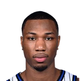
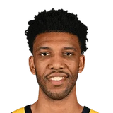

“Obviously the attention that Ben Simmons and (Joel) Embiid demand is huge, so guys like me are very valuable that can play off the ball and make shots, have similar success to JJ Redick and Landry Shamet in previous years, running off screens. I feel like I can provide some of those same things.”

What Desmond Bane has said about other NBA players and coaches
10 quotes from Desmond Bane about 10 other people around the NBA, newest first. Each one links to its original source.
Best quotes
Oh No He Didn't:Desmond on where Jamal Cain's dunk ranks:
“I say that's probably a solid top 4 as far as in game dunks. AB's gotta be in there, Ja had one in the playoffs. That one from Cain was special for sure”
Damichael Cole:Desmond Bane on his viewpoint of Steven Adams carrying Tony Bradley:
“When I looked up on the Jumbotron and saw his feet hovering the ground and (Steven) carrying him like he a lil kid, I couldn’t help but laugh.”
What NBA players and coaches have said about Desmond Bane →
Quotes per season
Desmond Bane talks most about
 Desmond Bane on Ja Morant5 quotes
Desmond Bane on Ja Morant5 quotes Ben Simmons1 quote
Ben Simmons1 quote
Jamal Cain1 quote Jaren Jackson Jr1 quote
Jaren Jackson Jr1 quote JJ Redick1 quote
JJ Redick1 quote Landry Shamet1 quote
Landry Shamet1 quote Rui Hachimura1 quote
Rui Hachimura1 quote Steven Adams1 quote
Steven Adams1 quote- Taylor Jenkins1 quote

Tony Bradley1 quote
2025-26
2 quotesOh No He Didn't:Desmond on where Jamal Cain's dunk ranks:
“I say that's probably a solid top 4 as far as in game dunks. AB's gotta be in there, Ja had one in the playoffs. That one from Cain was special for sure”
MrBuckBuck: Desmond Bane on Ja Morant and Jaren Jackson Jr. being at his game tonight:
“It’s special. Those are guys that I spent 5 years with… It’s a friendship that’ll last forever… I’m thankful that they pulled up to support.”
2022-23
3 quotesTim MacMahon:Desmond Bane on Rui Hachimura:
“It’s probably the best game of his career. It’s a seven-game series. Let’s see if he can do it again Wednesday.”
Desmond Bane on Ja Morant:
“We’re a big family. We’re wrapping our arms around him and showing our love to him.”
Drew Hill:Desmond Bane on Ja Morant’s payday:
“He deserves it and more. He put the work in. He’s a great representation of our program and what we stand for. I’m really happy for him.”
2021-22
4 quotesDamichael Cole:Desmond Bane on his viewpoint of Steven Adams carrying Tony Bradley:
“When I looked up on the Jumbotron and saw his feet hovering the ground and (Steven) carrying him like he a lil kid, I couldn’t help but laugh.”
Desmond Bane on playing w/Ja Morant:
“As far as me and Ja, I feel like we got good chemistry. Last year we didn't really have that chemistry when we were new to playing with each other. It's fun for sure.”
Big talk from Desmond Bane on Ja Morant:
“We are going to war with Ja, he’s our leader. He’s going to be an All-Star and probably an All-NBA player.”
“It started as soon as I touched down after the draft. It started with Coach (Taylor) Jenkins and the Grizzlies organization, of course. But as soon as I got to the hotel, people started bringing me gear and welcoming me with open arms. I’m thrilled to be a part of this team and be a part of Memphis.”
2020-21
1 quote“Obviously the attention that Ben Simmons and (Joel) Embiid demand is huge, so guys like me are very valuable that can play off the ball and make shots, have similar success to JJ Redick and Landry Shamet in previous years, running off screens. I feel like I can provide some of those same things.”